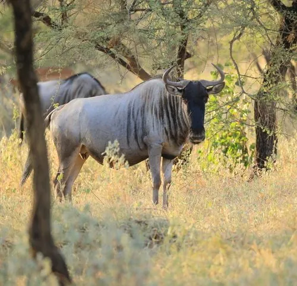

哺乳动物 · 动物界
角马 Connochaetes taurinus

非洲草原上数量庞大的大型羚羊，每年参与上百万只的大迁徙，雌雄都长角，常结成庞大的群体活动。
- 分类
- 门脊索动物门纲哺乳纲目偶蹄目科牛科属角马属
- 栖息环境
- 非洲东部和南部的稀树草原与短草草地，靠近水源的开阔地带
- 地理分布
- 非洲东部和南部，塞伦盖蒂—马赛马拉和克鲁格等草原
- 保护级别
- IUCN 无危（LC）
物种志
角马体长 1.7–2.4 米，尾长 0.6–1.0 米，肩高 1.2–1.5 米，体重 150–290 kg。它的体形粗壮，肩部高于臀部，被毛为灰褐至蓝灰色，颈部和肩部有鬃毛，面部和四肢颜色较深；雌雄都长有角，雄角较大，先向下弯再向上翘。
角马分布于非洲东部和南部的稀树草原和草地，是塞伦盖蒂—马赛马拉生态系统中最主要的大型食草动物之一。每年旱季来临时，上百万只角马与斑马、瞪羚一起组成大迁徙队伍，跨越马拉河寻找水源和草场。角马主食短草，需要定期饮水，结成数千只的大群活动，群体行动时能共同抵御狮子、鬣狗。雌兽妊娠期约 8–8.5 个月，幼崽在集群产仔期集中出生，出生后几分钟内就能站立奔跑。角马种群总体稳定，但其迁徙路线受围栏、农田和气候变化影响。
形态与习性
- 食性以短草为主，需定期饮水
- 体长1.7–2.4 m，尾长 0.6–1.0 m
- 体重150–290 kg
- 寿命野外约 20 年
- 繁殖妊娠期约 8–8.5 个月，每胎 1 仔
- 角雌雄都长角，雄角较大
- 迁徙每年上百万只参与东非草原大迁徙
趣味知识
- 每年上百万只角马参与东非草原大迁徙，形成壮观场面。
- 角马幼崽出生后几分钟内就能站立奔跑，以躲避捕食者。
- 雌雄角马都长角，雄角先向下弯再向上翘。
- 角马必需定期饮水，大迁徙正是追随水源和草场。